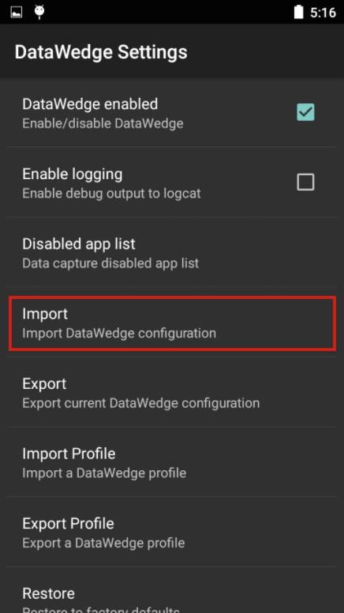

Overview
This guide covers settings for the DataWedge app, including enabling and disabling DataWedge on the device and the management of Profile and Configuration files for backup and mass-deployment. For information about creating and implementing Profiles and Plug-ins, see the Profile Guides.
DataWedge Settings
Most of the functionality referenced in this guide is accessed through the DataWedge Settings panel.
To access DataWedge Settings:
1. From the Profiles screen, tap the "hamburger" menu and select Settings as highlighted below. The DataWedge Settings panel appears similar to the image in Step 2.
 Access the DataWedge Settings panel from the Profiles screen.
Access the DataWedge Settings panel from the Profiles screen.
2. Tap the desired feature to invoke it or change its state.
 The DataWedge Settings panel
The DataWedge Settings panel
Functions of the DataWedge Settings panel:
DataWedge enabled - Controls the DataWedge service. Uncheck this box to disable DataWedge on the device and return control of scanning hardware to the system.
Enable logging - Enables DataWedge to output logs for viewing in Logcat, Android Studio or a compatible viewer.
Disabled app list - Disables scanning functions for selected apps and/or activities anywhere on the device. See more.
Import - Invokes navigation for importing a DataWedge config file from device storage, replacing the current DataWedge settings. See more.
Export - Exports the current DataWedge configuration to device storage. See more.
Import Profile - Invokes navigation for importing a DataWedge Profile from device storage. If a Profile of the same name already exists in DataWedge, settings of the existing Profile will be updated to match those of the imported file. See more.
Export Profile - Exports an individual DataWedge profile to device storage. See more.
Restore - Returns DataWedge on the device to factory default settings. See more
Logging
DataWedge provides the option of outputting system log messages for viewing through the Logcat command line tool, Android Studio or another compatible viewer, usually over a USB connection.
To Enable/Disable Logging:
From the DataWedge Settings panel, tap Enable Logging to enable or disable logging as desired.

Disable Apps
DataWedge can prohibit certain apps from accessing its data capture services. This can be useful as a security measure to ensure that acquired data is sent only to approved apps, or simply as a means of controlling which apps will have access to the scanner. By default, all apps have access.
To Disable Data Capture for an app:
From the DataWedge Settings panel, tap Disabled app list:

A list appears showing all installed apps and packages, similar to the image below. Tap one or more app(s) or activities to add to the disabled list, scrolling as necessary.

Notes:
- Apps/activities associated with a specific profile cannot be disabled.
- Disabled apps/activities cannot be associated with a profile.
- Disabling a parent package disables all of its activies.
- A disabled activity does not disable the parent or its other activities.
Disable DataWedge
Control of barcode scanning hardware is exclusive. When DataWedge is active, Scanner and Barcode APIs of apps such as Enterprise Browser and others will be inoperative. Likewise, when an app such as Enterprise Browser controls the scanning hardware, other apps (including DataWedge) are locked out. It is therefore important to understand how to take control of a device's scanner hardware and, if necessary, release it to other apps when scanning is complete.
To disable DataWedge:
1. Start DataWedge and navigate to the Profiles list (if not shown by default).
2. Tap on the "hamburger" menu and select -> Settings:
3. Uncheck the "DataWedge enabled" checkbox. Control of scanner hardware is returned to the system.

To learn how to access DataWedge programmatically, see the DataWedge APIs.
Mass Deployment
Once DataWedge is set up and configured as desired on a device, settings can be saved to a file and distributed to other devices either manually or using a Mobile Device Management (MDM) system.
Export a Config
Once DataWedge is set up and configured as desired on a device, its settings file can be exported, distributed to other devices, imported and activated automatically (or imported manually, as above).
To Export a DataWedge config file:
1. From the DataWedge Settings panel, tap Export as highlighted below. A screen appears similar to the one in Step 2.

2. If more than one storage device exists, tap the desired storage device, then tap Export. Only the storage device may be selected; the path will be inserted automatically.

Notes:
- The DataWedge config file is always named
datawedge.db. - The default path and filename of an exported configuration file is:
/storage/sdcard0/Android/data/com.symbol.datawedge/files/datawedge.db - If an external SD card is installed, an alternate path can be selected. For example:
/storage/sdcard1/Android/data/com.symbol.datawedge/files/datawedge.db
3. Retrieve the file datawedge.db from the device and distribute to other devices manually or through a Mobile Device Management (MDM) system.
Export a Profile
Once a DataWedge Profile is set up and configured as desired on a device, it can be exported and distributed for use on other devices throughout an enterprise. This enables a company to fine-tune settings for the acquisition, manipulation and disposition of data for specific applications(s), and easily propagate those settings to others in the organization.
If more than one Profile is to be created, exported and distributed at the same time, it might be beneficial to create and export the Profiles together as a single DataWedge Configuration file.
To Export a Profile:
1. From the DataWedge Settings panel, tap Export Profile as highlighted below. A list of Profiles on the device appears similar to the image in Step 2.

2. If more than one storage device exists, tap the desired storage device, then the name of the Profile to be exported, then tap Export. Only the storage device and Profile may be selected; the path will be inserted automatically.

The default path and filename of an exported Profile is:
/storage/sdcard0/Android/data/com.symbol.datawedge/files/dwprofile_profilename.db
If an external SD card is installed, an alternate path can be selected:
/storage/sdcard1/Android/data/com.symbol.datawedge/files/dwprofile_profilename.db
3. Retrieve the exported file from the device and distribute to other devices manually or through a Mobile Device Management (MDM) system.
DO NOT RENAME THE EXPORTED FILE. Doing so will result in errors and import failure.
Notes:
- If a Profile exists on the device with the same name as one being imported, the existing profile will be overwritten by the imported one.
- Profiles created on one device might be incompatible with another due to variations in device peripherals and configurations.
Import a Config
DataWedge can accept settings created on another device and distributed throughout an enterprise by importing a DataWedge Configuration file. This file contains Profiles, Plug-ins and all DataWedge settings, including its status (enabled/disabled), logging and other configurable parameters.
To Import a DataWedge Configuration file:
1. From the DataWedge Settings panel, tap Import. A screen appears similar to the one in Step 2, below.

2. Navigate to the imported file on device storage using the interface provided:
Imported settings take effect immediately and overwrite all prior settings.
The DataWedge config file is always named datawedge.db.
Import a Profile
Importing a Profile enables settings created elsewhere to quickly be activated on a device. This enables organizations to develop and fine-tune Profiles in a test lab, for example, before exporting and deploying them to the field or across an enterprise. For more information, see Export a Profile, below.
While the Profile importing process is similar to that of the Configuration file, the Profile itself is very different. A Profile is a single group of settings that control how DataWedge will behave with one or more specific applications and devices. A Config file can contain numerous Profiles as well as other DataWedge settings. Importing a Config file overwrites all previous DataWedge settings and Profiles. Importing a Profile simply adds the imported Profile to the list of available Profiles on the device. If a Profile exists on the device with the same name as the one being imported, the existing Profile will be modified by the imported one.
To Import a DataWedge Profile:
1. From the DataWedge Settings panel, tap Import Profile as highlighted below. A screen appears similar to the one in Step 2.

2. Navigate to the file being imported from device storage using the interface provided:
 Warning: If a Profile exists on the device with the same name as the one being imported, the existing Profile will be modified by the imported one.
Warning: If a Profile exists on the device with the same name as the one being imported, the existing Profile will be modified by the imported one.
DataWedge Profiles are always named dwprofile_profilename.db.
Restore (defaults)
DataWedge has the ability to reset all user-configured settings and restore them to their original factory defaults. This action cannot be undone.
To Restore DataWedge to its factory-default settings:
1. From the DataWedge Settings panel, tap Restore as highlighted below. A confirmation screen appears similar to the image in Step 2.

2. Tap Yes to Restore factory defaults (tap No to cancel).

Enterprise Folder
On Zebra devices, internal storage contains a directory named /enterprise that persists (is not erased) after an Enterprise reset is performed on the device. DataWedge stores its files in several directories below /enterprise, which allows them to persist after an Enterprise reset.
Directory Behavior:
/enterprise/device/settings/datawedge/enterprisereset/- DataWedge checks this folder following an Enterprise reset and imports a configuration file and/or any Profile(s) present./enterprise/device/settings/datawedge/autoimport- DataWedge monitors this folder whenever it's running and immediately imports and activates any configuration file placed here, overwriting prior settings. See Auto Import, below.
Notes:
- A DataWedge Restore operation will delete the working .db file.
- A Factory reset deletes all files in the
/enterprisefolder. - If a
datawedge.dbfile exists in the/enterpriseresetdirectory, DataWedge will activate it as the new working config file.
Auto Import
DataWedge supports remote deployment of config files (datawedge.db) and Profiles (dwprofile_profilename.db) to devices through commercially available third-party Mobile Device Management (MDM) systems. When DataWedge launches, it checks the /enterprise/device/settings/datawedge/autoimport directory for the presence of such files. If any are found, it executes the functions below.
DataWedge Auto-Import routine:
- Import the new file(s)
- Replace the existing config file and like-named Profile(s) (if any)
- Delete the imported files
- Put new settings immediately into effect
While DataWedge is running, it receives a system notification whenever a config file or Profile is placed in the /autoimport folder and executes the same four functions.
Notes:
- For the best experience, Zebra strongly recommends that users be advised to exit DataWedge before new config files are remotely deployed.
- On devices running Android KitKat or later, the
/enterprisefolder cannot be seen with File Explorer or other user-level tools. Moving configuration files to and from the/autoimportor/enterpriseresetfolders must be done programmatically, with a staging client app or MDM. - DataWedge will attempt to consume any of the monitored “.db” files as soon the file name(s) appear in the
/autoimportfolder. Therefore, it is possible for DataWedge to attempt to consume a file before it is completely written. To avoid this condition, Zebra recommends initially storing the file with an alternate extension (i.e. ".tmp") and changing the extension to .db once writing is complete. See sample code, below. - Zebra recommends applying explicit file permissions to the all .db files so that DataWedge will not be impeded from any of its file procedures.
Programming Notes
Capture Data, Photos in One App
It is possible to take pictures and capture barcode data using the same application if the application was designed with this in mind.
- Add separate Activities in the app: one for barcode scanning and another for picture taking.
- Create a DataWedge Profile with the following settings:
- Associate the Profile with the picture-taking Activity
- Disable scanning in the Profile
- Use the standard Android-SDK APIs to control the camera
- When the app is used for scanning, the default DataWedge profile will come into effect.
- For accessing specific decoders, processing rules or other special scanning needs, a second DataWedge Profile can be created and associated with the barcode scanning activity of the app.
Sample Import Code
The following sample Java code can be modified to suit individual needs.
//NOTE: This Java code for demo purposes only; it should not be used without testing.
InputStream fis = null;
FileOutputStream fos = null;
String autoImportDir = "/enterprise/device/settings/datawedge/autoimport/"
String temporaryFileName = "datawedge.tmp";
String finalFileName = "datawedge.db";
// Open the db as the input stream
fis = context.getAssets().open("datawedge.db");
// create a File object for the parent directory
File outputDirectory = new File(autoImportDir);
// create a temporary File object for the output file
File outputFile = new File(outputDirectory,temporaryFileName);
File finalFile = new File(outputDirectory, finalFileName);
// attach the OutputStream to the file object
fos = new FileOutputStream(outputFile);
// transfer bytes from the input file to the output file
byte[] buffer = new byte[1024];
int length;
int tot = 0;
while ((length = fis.read(buffer)) > 0) {
fos.write(buffer, 0, length);
tot+= length;
}
Log.d("DEMO",tot+" bytes copied");
//flush the buffers
fos.flush();
//release resources
try {
fos.close();
}catch (Exception e){
}finally {
fos = null;
//set permission to the file to read, write and exec.
outputFile.setExecutable(true, false);
outputFile.setReadable(true, false);
outputFile.setWritable(true, false);
//rename the file
outputFile.renameTo(finalFile);
}